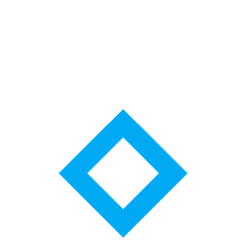
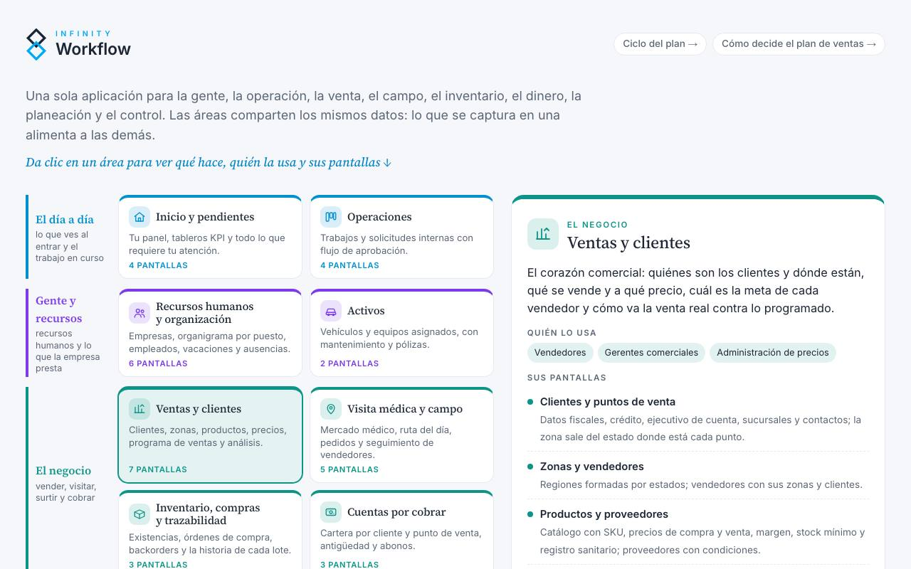
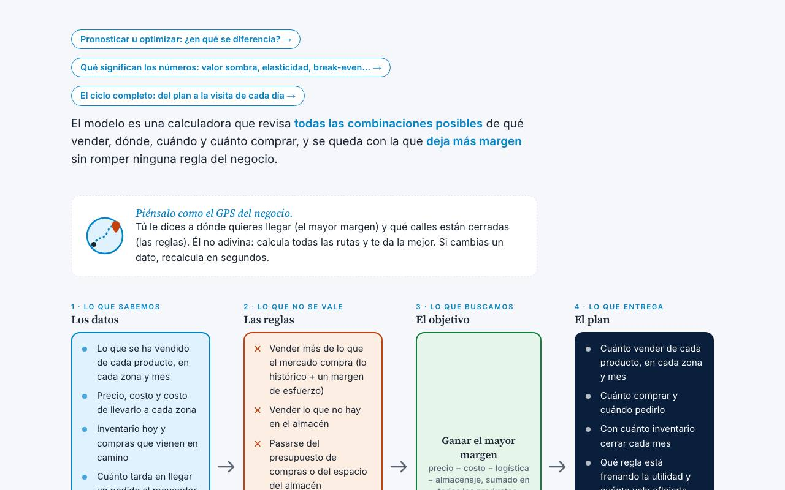
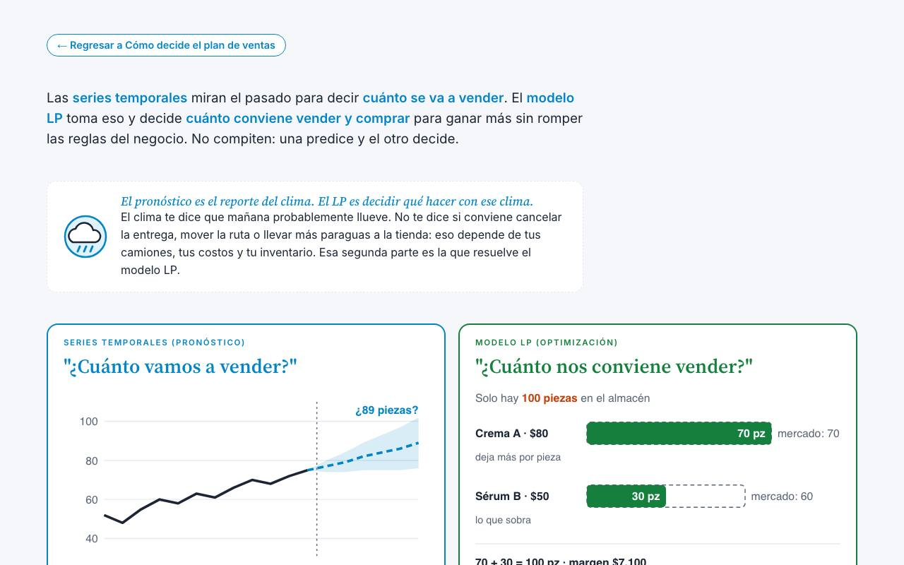

De la estrategia a la operación medible.
Planeamos, programamos, implementamos y evaluamos su operación con modelos de optimización, socios que trabajan en campo y una plataforma propia: Infinity Workflow.
Cuatro capacidades. Un solo ciclo.
Acompañamos el ciclo completo: decidir qué conviene hacer, convertirlo en un programa ejecutable, ponerlo a operar y medir que los números se cumplan. Cada fase entrega algo que se usa al día siguiente.
Planeación estratégica
Definimos qué producir, vender, comprar e invertir con modelos de optimización (LP) que equilibran demanda, capacidad, inventario y metas financieras.
- Modelo de optimización y escenarios
- Plan óptimo con metas por periodo
- Sensibilidad y precio sombra de cada restricción
Programación operativa
Convertimos el plan en programas concretos: metas por persona, zona y mes; rutas, turnos y órdenes; todo acordado con quien lo ejecuta.
- Programa por equipo, zona y periodo
- Asignación según capacidad e historia
- Acuerdo de metas con cada responsable
Implementación de operaciones
Ponemos el programa a operar: procesos, roles, PMO, tableros y la plataforma que lo sostiene, con socios presentes en campo.
- Diseño de procesos y gobierno (PMO)
- Puesta en marcha de Infinity Workflow
- Capacitación y adopción en campo
Evaluación y seguimiento
Medimos lo real contra lo planeado, explicamos las brechas y replaneamos. No cerramos un proyecto hasta que los números lo confirman.
- Tableros de KPI en tiempo real
- Revisiones mensual, trimestral y anual
- Replaneación con los meses cerrados
«No entregamos reportes que se archivan. Entregamos resultados que se miden.»Principio de trabajo de KI Advisory & Strategy Group
Socios en campo, no consultores de escritorio.
Cuatro socios fundadores con trayectoria en refinación, programas internacionales, estrategia corporativa y política energética trabajan directamente en cada proyecto.
Combinamos ingeniería, matemáticas de optimización y gestión de programas: el modelo dice qué conviene, el programa dice quién y cuándo, y la plataforma muestra si está ocurriendo.

La plataforma que cierra el ciclo.
Desarrollamos Infinity Workflow para que la estrategia no se quede en una presentación: el plan, el programa, la ejecución diaria y su evaluación viven en un mismo lugar.
- Optimización (LP) del plan de ventas, compras e inventario
- Programación por vendedor, zona y mes, con acuerdo de metas
- Rutas y visitas del día, operaciones, personal y flotilla
- KPI, analítica y asistente de IA en español e inglés
Conocemos los problemas de su industria.
Oil, Gas & Refinación
Modelos LP de refinerías y petroquímica, balance de crudos y productos, y programación de plantas. Experiencia directa en la operación y planeación de refinerías.
Nuestra industria más profundaManufactura industrial
Planeación de producción, control avanzado de procesos y eficiencia operativa en plantas de proceso.
APC · DCS · LeanFarmacéutica y salud
Plan de ventas óptimo, programación de representantes, visita médica, inventario y evaluación contra metas.
Con Infinity WorkflowDistribución y ventas en campo
Empresas con fuerza de ventas o técnicos en campo: dispositivos médicos, materiales de construcción y consumo.
Con Infinity WorkflowAgropecuario y ganadero
Planeación por temporada y ciclo productivo, programación de técnicos y vendedores en campo, abasto de insumos y evaluación por región y productor.
Con Infinity WorkflowInfraestructura & EPC
Gobierno de portafolios y PMO para programas complejos con varios contratistas.
PMO · Gobierno de portafoliosEnergía y política pública
Estrategia energética, relación institucional y evaluación de decisiones críticas para el sector.
Estrategia · RegulaciónUn método probado, de principio a fin.
Cada proyecto empieza con un diagnóstico sin costo y termina cuando los indicadores acordados confirman la mejora.
Solicitar diagnóstico inicialDiagnóstico
Entendemos la operación, los datos y las restricciones reales; acordamos los indicadores que definirán el éxito.
Diseño del plan y del programa
Construimos el modelo, evaluamos escenarios y convertimos el plan óptimo en metas y programas por responsable.
Puesta en marcha
El plan y el programa operan con los equipos, con procesos, gobierno y la plataforma que los sostiene.
Evaluación y ajuste
Medimos lo real contra lo planeado, explicamos las brechas y replaneamos hasta que la mejora se sostiene.
Ideas que se pueden operar.

Boceto · mapa de la aplicaciónMapa de Infinity Workflow

Planeación de ventasCómo decide el plan de ventas
El modelo es una calculadora que revisa todas las combinaciones posibles de qué vender, dónde, cuándo y cuánto comprar, y se queda con la que deja más margen sin romper ninguna reg…

Dos formas de planearPronosticar u optimizar
Las series temporales miran el pasado para decir cuánto se va a vender. El modelo LP toma eso y decide cuánto conviene vender y comprar para ganar más sin romper las reglas del neg…
¿Dónde está la brecha entre su plan y su operación?
La primera consulta es sin costo y sin compromiso. Respondemos en menos de 24 horas hábiles.
Agendar consulta inicial